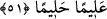
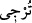
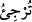

51. Onlardan dilediğini geriye bırakır, dilediğini de yanına alırsın. Bıraktığın
hanımlarından arzu ettiğini tekrar yanına almanda, senin üzerine bir günah yoktur.
Böyle olması onların mutlu olmalarına, üzülmemelerine ve hepsinin, senin
verdiklerine razı olmalarına daha uygundur. Allah, kalblerinizde olanı bilir. Allah
hakkıyla bilendir, halîmdir.
“Onlardan dilediğini geriye bırakır,”
İmam Nâfi‘, Hamza, Kisâî, Hafs, Ebû Ca‘fer, “__WORD__ diye, diğer kıraat imamları ise “__WORD__ diye okumuştur. İkisinin de mânâsı aynıdır. el-Kâmûs’ta belirtildiği gibi bir işi
geri bırakmak, te’hir etmek/ertelemek demektir. Keşfül-esrâr’da şöyle denilmiştir: “__WORD__, boşamaksızın kadınla beraber olmayı ertelemektir. Yâni, ey Muhammed,
eşlerinden dilediğini geriye bırakıp te’hir edersin, nöbet/sıra ve taksime bakmaksızın
dilediğinle beraber yatmayı terk edersin.
“Dilediğini de yanına alırsın.” Nöbet/sıra ve taksimi dikkate almadan dilediğini
yanına alır ve onunla birlikte yatarsın. Nöbetinden günlerce fazla bile olsa dilediğinle
beraber olma, kezâ beraberliği terk konusunda tercih senin elindedir. Ya da onlardan
dilediğini boşar, dilediğini tutarsın. Nitekim Bahru’l-ulûm’da böyle geçmektedir.
“Bıraktığın” ric‘î talakla boşadığın, terk edip kendinden uzaklaştırdığın
“hanımlarından arzu ettiğini” istediğini ve taleb ettiğini “tekrar yanına almanda,
senin üzerine bir günah” kınama, azarlama ve darlık “yoktur.” Keşfü’l-esrâr’da: “Bu
üç hususta sana bir sıkıntı yoktur.” denir.
Bu taksimat maksadı câmi bir taksimdir. Bu, Hz. Peygamber (s.a.)’in ya boşaması ya
da nikahta tutmasıdır. Nikahta tutarsa ister gerdeğe girer ister girmez. İster taksim yapar,
ister yapmaz. Boşadığı zaman boşadığı kadına bir daha arzu etmeyebilir ya da edebilir.
Cumhur bu âyetin eşler arasında taksim konusunda indiği görüşündedir. Çünkü
taksimde eşit davranmak Hz. Peygamber (s.a.)’e vâcib idi. İşte bu âyet nâzil olunca bu
hüküm ondan sâkıt oldu. Onlar hakkında tercih tamamen Hz. Peygamber (s.a.)’e
bırakıldı. Bu durum Hz. Peygamber (s.a.)’in özelliklerindendi.
Rivâyet edilir ki Hz. Peygamber (s.a.)’in eşleri nafakalarının ve ziynet elbiselerinin
artırılmasını taleb edince Hz. Peygamber (s.a.) onları bir ay terk etti. Nihâyet tahyîr
âyeti (el-Ahzâb, 33/28-29) nâzil oldu. Hz. Peygamber (s.a.)’in eşleri O’nun kendilerini
boşamasından endişe ettiler ve: “Ey Allâh’ın Nebîsi, sen bize kendinden ve malından
dilediğin payı ayır ve bizi bulunduğumuz halde bırak.” dediler. Peygamber eşlerinden
beşini; Hz. Ümmü Habîbe, Meymûne, Sevde, Safiyye ve Cüveyriye’yi erteledi ve
onlara istediği gibi taksimde bulunurdu. Dört tanesini; Hz. Aişe, Hafsa, Zeyneb ve